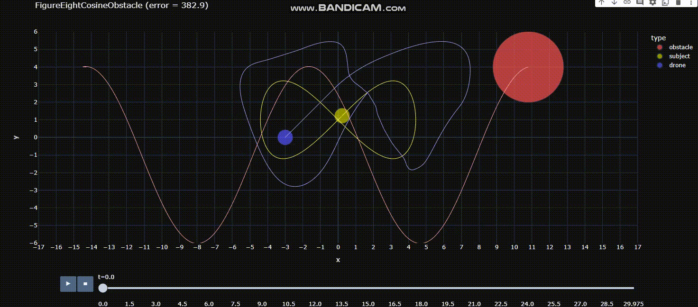

MPC with a Quadrotor to track a moving subject while avoiding a moving obstacle
Implemented Model Predictive Control to enable a drone (BLUE) to track a moving subject (YELLOW) while avoiding a moving obstacle (RED) using Potential Field Theory. Additional criteria involved tracking the subject from a specified relative angle while also maintaining a desired range from subject.